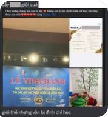
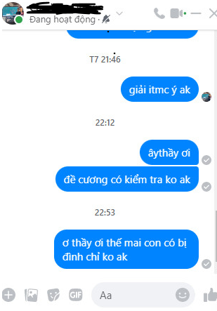

Published on
Mới đây một sự việc đã gây chấn động dư luận, rất nhiều nguồn tin không chính thống đã nổi lên vì vụ việc này. Theo như một số người kể lại, những học sinh trong lớp anh A (giấu tên) đã cho rằng anh bị định chỉ học do bị ghi tên vào sổ đầu bài quá nhiều lần.
Thông tin này là thông tin hoàn toàn sai lệch, tất cả là do các nguồn thông tin không chính xác đồn thổi và gây dựng chuyện, toàn bộ học sinh hãy cảnh giác với các đối tượng lan truyền thông tin này!
Cụ thể, anh A vi phạm nội quy trường lớp vô cùng ít trước đây, với số lần vi phạm chưa đếm nổi trên đầu ngón tay. Việc giáo viên chủ nhiệm của anh A cảnh cáo anh A về việc đình chỉ học một tuần trong trường hợp anh vi phạm nội quy vào ngày 26/03/2023 là hoàn toàn không có thật. Từ ngày 26/03/2023 đến ngày 31/03/2023, anh A chấp hành nội quy trường lớp một cách vô cùng nghiêm túc trong toàn bộ các tiết học, đặc biệt là tiết công nghệ của thầy Q. Do đó, chúng tôi xin khẳng định lại, thông tin này là hoàn toàn sai sự thật, gây ảnh hưởng đến cuộc sống cá nhân của anh A và gia đình anh.
Ngoài ra, chúng tôi mong các bạn có thể ủng hộ anh A trên con đường sự nghiệp tìm kiếm cho mình chiếc cúp đồng anh hằng mong ước để bù đắp cho những tổn thất anh phải gánh chịu.
Xin cảm ơn vì sự ủng hộ và quan tâm từ những người ủng hộ anh A từ trước đến nay, cảm ơn các bạn đã vững lòng tin vào anh A - người thợ săn chân chính và tài ba duy nhất trong mắt chúng tôi!
Author: Minh B (website: Dangheo)